Waddell Park in Niles Ohio

People enjoying Waddell Pool in 1934

With the Great Depression of the 1930’s in full effect, the federal government announced a public works program offering to pay 30% of the cost of projects that would give work to the needy. The idea of a swimming pool and bath house in Waddell Park began to take shape.
{kind=link}
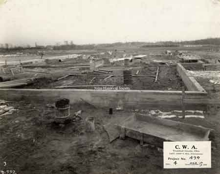
With the Great Depression of the 1930’s in full effect, the federal government announced a public works program offering to pay 30% of the cost of projects that would give work to the needy.

The pool was dedicated Wednesday July 25,1934. The newspaper stated,” to several thousand swimming enthusiasts of the city, today marks a noted change from an unsanitary dirtied water creek swimming hole to the most modern and up-to-date pool.”
{kind=link}
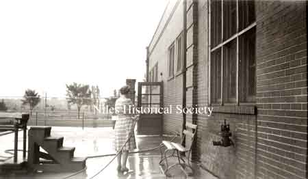
Pool Staff cleaning diving area

Front view of Niles Swimming Pool 1980s.
{kind=link}
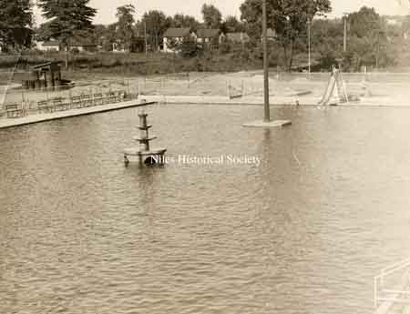
View of Waddell Pool empty in 1934.

Program cover of Waddell Pool
{kind=link}
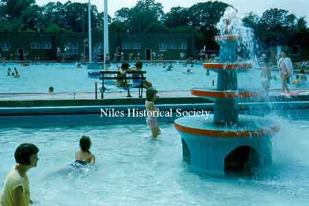
View of Niles City Pool in Waddell Park.

The main entrance to the Niles City Pool as it appeared in 1934. The left side had the changing rooms for women and girls while the right side was for men and boys.

Waddell Pool opened in 1934 and closed in 2014. Although its future is uncertain today, many fondly remember its past.
{kind=link}
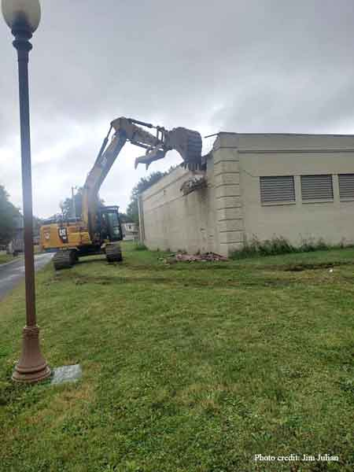
A series of photographs of the Waddell Pool bath house as it is demolished on September 6, 2022.

A series of photographs of the Waddell Pool bath house as it is demolished on September 6, 2022.
{kind=link}
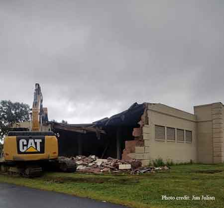
A series of photographs of the Waddell Pool bath house as it is demolished on September 6, 2022.
{kind=link}
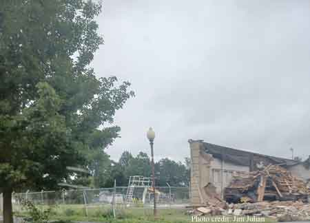
A series of photographs of the Waddell Pool bath house as it is demolished on September 6, 2022.
{kind=link}
Studio portrait of Mrs. Jacob Waddell nee Mary Ann Thomas.

Jacob D. Waddell (1870-1939)

Two slightly different views of Waddell Park before the pool was built.
{kind=link}
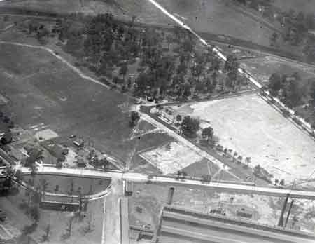
Two slightly different views of Waddell Park before the pool was built.
{kind=link}
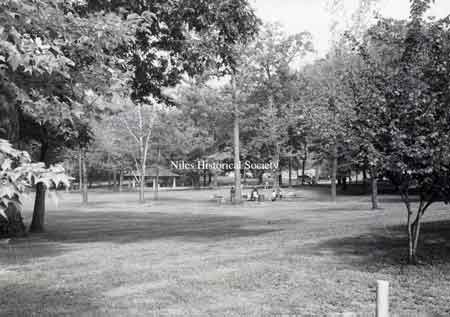
Picnicking at Waddell Park
{kind=link}
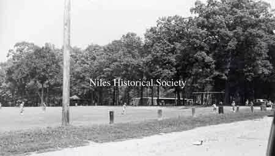
Baseball at Waddell Park
{kind=link}
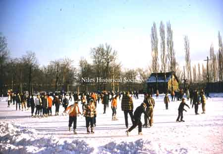
Ice-skating at Waddell Park
{kind=link}
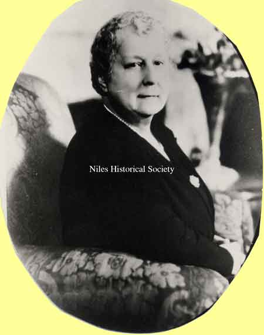
Margaretta Thomas Clingan